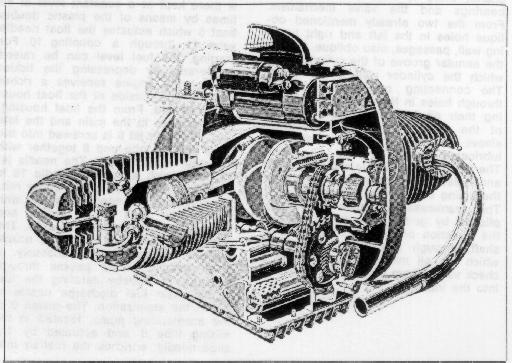
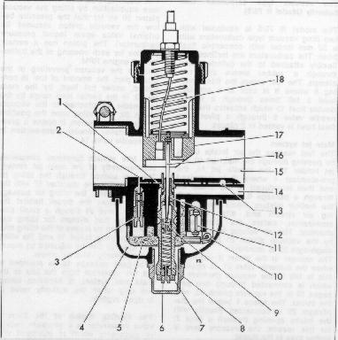
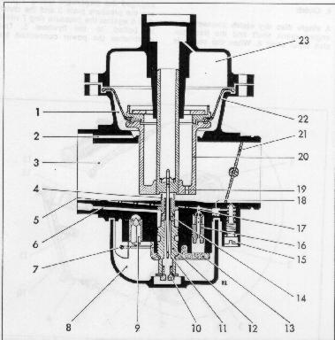
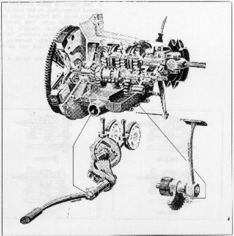
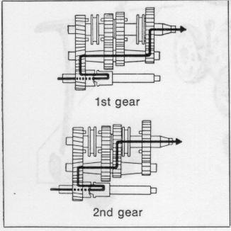
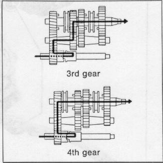
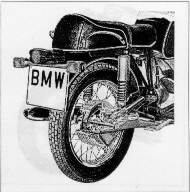
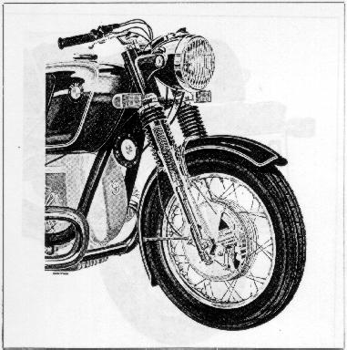

The engine in the R 50/5, R60/5 and R 75/5 is an air-cooled,
two-cylinder, four cycle spark-ignition engine.
The
engine housing
is designed as a one-piece tunnel housing,
reinforced by internal gussets;
it accomodates the crankshaft and the camshaft.
The one-piece crankshaft
is drop-forged steel.
Great rigidity is achieved by amply dimensioning the main journals
which overlap the connecting rod bearing journals.
The main and the connecting rod bearing surfaces are treated
to have a high surface hardness and abrasion resistance.
The crankshaft runs in three-layer bearings,
pressed into a die-forged alloy bearing retained
in the front and into the crankcase in the rear.
Careful dynamic balancing of the crankshaft
assures minimum vibration.
The split connecting rods run on the crankpins
also in three-layer bearings.
They are die-forged, with an I-profile.
The expansion-type connecting rod bolt
is screwed directly into the connecting rod caps.
Locating pins assure insert alignment.
The wrist pin runs in a bronze bushing.
The camshaft
is a case-hardened die casting, phosphated for better glide characteristic.
It is located below the crankshaft and runs directly in the engine housing
in the rear and in a flanged aluminum bearing in the front.
In the rear, the camshaft carries the internal rotor of the oil pump.
It is driven from the front through a sprocket.
The ignition advance unit and the tachometer drive gear is also
located in the front of the camshaft.
The pistons
are aluminum alloy cast and equipped with three piston rings;
the top ring is hard-chromed,
the second is a nose ring,
the third is an oil scavenger ring.
The large dimensioned off center wrist pin is floating
and is secured against axial movement by circlips.
The cylinders are cast iron sleeves with aluminum fins
manufactured by utilizing the Al-Fin process.
This assures excellent heat dissipation thereby assuring
good oil adhesion.
Two push rod protection tubes are pressed into the bottom
of the cylinder and sealed against the motor housing
with rubber sleeves; they also serve as oil return tubes.
The cylinder is sealed to the engine housing with a
combination aluminum fiber gasket, and to the cylinder head
with a metal-asbestos gasket.
The aluminum alloy
cylinder head
is carefully fined and equipped with shrunk-in valve seats
(fine pearlitic gray iron for the intake,
high alloy gray iron for the exhaust).
The valve guides are press-fitted.
With the cylinder interposed,
the cylinder head is connected to the engine housing by
four through-bolts.
In addition, two bolts connect the cylinder head directly
to the cylinder.
Attached to the through-bolts are, at the same time,
also the rocker arm blocks.
The rocker arms pivot on floating bronze bushings.
This cylinder head design utilizing pressed-in sleeves
and protection tubes permits the cooling air to reach
the areas that are subject to the highest temperatures,
this assures maximum cooling.
The valves are actuated by
the camshaft through hardened followers, push rods, and rocker arms.
A duplex chain drives the camshaft at half the crankshaft speed.
The stretching of the duplex chain is compensated for by a
spring loaded (leaf spring) chain tightener.
The push rod has approximately the same coefficient of expansion
as the cylinder, maintaining constant valve clearance.
The exhaust valves have a highly heat conductive, ferritic, stem
and an austenitic, scale resistant, head;
in addition, the valve stems are hard-chrome plated,
the valve seat has a coating plated onto it.
The keeper arrangement allows the valves to rotate during operation.

The engine has a high pressure lubricating system
with a main flow filter.
The oil pump is an Eaton trochoid-gear pump,
driven by the camshaft.
It sucks the oil from the oil pan through an immersed bell
with a perforated screen,
pumps it through the main lubricating passages
into the main flow filter and from there through an annular
passage in the camshaft bearing flange to the
annular passage in the main bearing cover.
From the annular passage of the bearing cover the oil flows,
first, through a hole in the left side wall of the engine housing
to the rear main bearing and then,
through two holes leading obliquely upward in the two side walls
of the engine housing, to the upper tie rod bolts.
Through the two upper through bolt holes in the cylinder it gets
to the tappet bearing blocks and shafts;
there it lubricates the tappet bearings and the valve mechanism.
From the two already mentioned oblique holes in the left and
right housing wall, passages, also oblique, lead to the annular
groove of the cylinder from which the cylinder wall is lubricated.
The connecting rods are lubricated through holes in the crankshaft,
receiving their oil from the annular groove of the front or rear
main bearing sleeve.
The rear camshaft bearing is lubricated directly by the oil pump.
The timing chain dips into the oil sump and splashes oil over all
parts inside the timing cover.
The
crankcase ventilation
is accomplished by guiding the fumes against the direction
of rotation of the crankshaft, through a settling chamber
in which the oil mist can separate to a check valve.
From there it is introduced into the intake.
The models R 50/5 and R 60/5 are
equipped with two Bing slide type carburetors
with a 26 mm throat with removable, concentric float housing.
The carburetors are inclined and attached to the cylinder head
with a clamp ring.
The fuel flows into the float bowl 4 and is there kept at a constant
level at all times by means of the plastic double float 5 which
actuates the float needle valve 11 through a coupling 10.
For starting, the fuel level can be raised temporarily by depressing
the tickler so that the engine receives a richer mixture.
The outside of the float housing is vented.
From the float housing, the fuel goes to the main and the idle jets.
The main jet
6 is screwed into the lower mixing tube end 8 together with
the main jet support 7.
The needle jet 12, into which a conical needle 16 is immersed,
is located at at the upper mixing tube end.
The needle, together with the throttle slide 17, is raised
and lowered by the throttle cable 18.
The throat and main fuel discharge nozzle are thereby varied
simultaneously.
A small amount of air passes through passage 14 thereby aerating
the fuel in the main fuel discharge nozzle to aid the atomization.
The piston 9 of the accelerating pump, located in the mixing tube 8
and actuated by the slide needle, enriches the fuel/air mixture
during slow and fast acceleration.
In the carburetor throat 15 the fuel strikes the intake air
and is now fully atomized before it reaches the engine's
combustion chamber.
The fuel sucked from the float chamber through the
idling jet 3
is mixed with the air flowing in from an idle air passage 1,
hte volume of which is adjusted by the idle air regulating screw 13,
and it enters the air funnel directly behind the throttle slide
through a small hole 2.
A richer mixture is obtained by screwing the idle air regulating screw in,
a leaner mixture by screwing it out.
The idle speed is regulated by the throttle slide stop screw.
The fuel/air mixture is adjusted with the idle mixture screw.
A provision is made to allow fuel to flow overboard in case the
gastank fuel petcock is left on.

The model R 75/5 is equipped with two Bing vacuum type carburetors with a 32 mm throat with concentric float bowl. The carburetors are inclined and flexibly attached to the cylinder head through a rubber sleeve and two clamps. The fuel enters the float housing 8 where it is kept at a constant level a tall times through a plastic double float 13 which actuates the float needle valve 9 through a pivot. The float bowl is vented in 2 places.
Main jet system
The fuel reaches the air intake throat by passing through the main jet 10,
the jet holder 12, the needle jet 14, the pre-atomizer 4
where it is premixed and then introduced to the intake air through a passage 6.
In the throat 3, the fuel/air mixture meets the incoming air stream and,
after intensive atomization, enters the combustion chamber.
The air volume is controlled by the vacuum piston 20 to which a diaphragm 22
is attached:
The vacuum in throat 3, increases when the butterfly valve 21, is opened,
this is felt in the vacuum chamber 23 which is connected through two
passages 19 in the vacuum piston 20, with the throat.
The space 1 below the diaphragm 20 is connected directly with the
intake opening through the hole 2;
for this reason, the pressure here is higher than in the throat.
The diaphragm 22 now effects a pressure equalization by lifting the
vacuum piston 20 so far that the pressure below the vacuum piston
assumes its original value again (equal pressure carburetor).
The piston has a certain position for each opening of the butterfly
and engine RPM.
Besides the vacuum prevailing in the intake port,
the amount of fuel is controlled,
under full load, but the main jet 10,
in the partial load range by the jet needle 11
attached to the vacuum piston 20;
depending upon the the position of vacuum piston,
it opens a greater or smaller annular cross-section in the needle valve 14.
The idle system
functions completely independently of the main jet system.
The fuel sucked through the idling jet 16 is mixed in the chamber 17
with the air coming from the idling air passage 5,
and enters the throat behind the butterfly valve 21 trough a small passage.
The fuel mixture for idling can be regulated by means of
the idling mixture screw 15 and
the idling fuel quantity can be adjusted by means of the
butterfly valve set screw.
A by-pass passage 18, is provided to aid the transition from the idle
to the main fuel system.
It becomes operative only when the butterfly valve 21 is open slightly.
The starting device
of the butterfly valve carburetor is a complete auxiliary carburetor
which is equipped with a rotary valve.
It functions only during starting and when the engine is cold.
It can be turned on and off by the operator through cables.
A space inside the float housing is designed as a starter fuel reservoir,
into which a starter immersion tube is introduced from above.
The vacuum developing when starting now has its effect,
since the butterfly valve is almost closed (idling position)
on the escape passage of the chocke behind the butterfly valve
and, hence, also upon the starter immersion tube;
the fuel in the starter reservoir, being replenished from the float bowl,
is thus syphoned off and mixed in the mixing chamber of the rotary
valve with the starter air entering through a calibrated hole,
forming a bubbly mixture.
This very fuel-rich starter mixture then meets the air flowing through
the butterfly valve gap and forms the starting mixture
which assures perfect starting, even at low temperatures.
After the engine has started, a pre-emulsion is formed in the
starter immersion tube through a calibrated air hole,
which makes the starting mixture leaner to the point where
continued smooth running of the engine during the start is assured.
Turn off the choke system as soon as possible so as to avoid
excess fuel consumption and a wash-off of the oil-film from the
cylinder walls.

The carburetors are adjusted at the factory, to operate with commercially available fuels. Changing the jets and the position of the needle is required only in special cases and should be left to the specialist.
A single disc dry clutch
connects the engine crank shaft and the transmission input shaft 8.
When the clutch is engaged the diaphragm spring 2 presses the pressure plate 3
and the clutch disc 6 against the pressure ring 7 which is bolted to the
flywheel 5.
This establishes the power connection between transmission and engine,
since the flywheel is rigidly connected to the engine crank shaft,
and the clutch plate is connected rigidly to the transmission drive shaft.
A diaphragm is spot welded to the pressure plate 3 between flywheel
and pressure ring.
This diaphragm allows the pressure plate freedom of axial movement,
and it transmits a part of the engine torque.
The clutch plate, equipped with bonded friction lining,
is mounted on the splines of the tranmission input shaft
and is movable in an axial direction.
Spacer bushings 1 between flywheel 5 and pressure ring 7 provide
slots through which the abraded clutch particles can escape.
The slots also facilitate cooling of the clutch.
To disengage the engine from the transmission, the clutch lever 10,
actuated by the clutch cable, presses through a push rod 12 against
the pressure plate 3, this compresses the diaphragm spring 2;
The contact between the clutch plate and the pressure plate
and the pressure ring 7 is interrupted.
The clutch lever pivots in a bearing block cast into the transmission cover.
After the clutch hand lever is released,
the clutch lever is returned into its initial position by a spring 11.
The four-speed transmission
is mounted directly to the engine housing.
The transmission permits changing the gear ratio
to permit the engine to operate in idle RPM ranges at all times.
The transmission consists essentially of an input shaft,
counter shaft, and output shaft, all three of which are
carried front and rear in over-rated ball bearings;
and of the shifting mechanism.
The input shaft has in front, the drive gear and in the rear,
the gear to actuate the kickstarter.
The clutch push rod is located inside the input shaft.
The drive gear is mounted with a cushioning device to absorb shock.
The counter shaft and output shaft have 4 gears each which are
constantly meshed.
Shifting is accomplished by pushing the foot shift lower up or down.
A segment gear turns the shifter cam plate when the foot shift lever
is actuated;
The 2 shifter forks are engaged in slots provided in the cam plate
and into sliding dogs.
The 2 dogs engage into the appropriate gear.
The 2 dogs have 7 windows which engage into 7 corresponding dowels
on each gear.
The dogs are splined on the haft and move axially between 2 gears,
thereby engaging them.
To prevent the gear from slipping out the cam plate is spring locked
with a pawl.
In neutral, a contact pin mounted on the shifter cam plate closes a
circuit, the green indicating light in the headlight instrument
cluster lights up, indicating neutral.

 
The double loop tubular frame made of oval tubes of great strength
is of welded construction.
In the area of the steering head, the transom tubes intersect the spinal tube.
This permits a certain longitudinal elasticity of the steering head
without affecting the very great torsional rigidity.
Moreover, the tunnel for the fuel tank can be kept very shallow.
The rear portion of the frame,
a very light triangular structure,
is bolted to the double loop tubular frame and is readily detached.
The passenger foot rests
can be folded.
They are adjustable for the most comfortable position.
The engine is mounted
in the frame with 2 studs, interconnecting both frame transoms.
The fuel tank,
capacity is approximately 6.35 gallons.
The fuel tank is rubber mounted with a form fitting rubber element in front,
on two vibration dampening rubber blocks in the rear.
This eliminates stress. Two wing nuts enable quick removal.
Two fuel petcocks
are screwed directly into the tank.
They are equipped with two fuel intake tubes each,
the longer one being so dimensioned that a fuel reserve of 1 gallon
remains in the tank.
The same fuel level in both tank halves is assured due to an
equalizer line which passes through the air filter chamber.
For parking,
the motorcycle is provided with a center stand and a side stand.
The chassis is not suited for side car use.
The rear wheel is driven by a drive shaft which runs in an oil bath
in the rear swing arm.
The universal joint mounted on the drive shaft on the transmission side,
is bolted to a drive flange mounted to the taper of the output shaft
of the transmission.
An internally splined coupling is mounted to the rear of the shaft
and is connected to the rear drive.
The teeth are curved to allow lateral movement.
This helical tooth coupling compensates for the required variation
in the length of the drive-shaft.
The rear wheel drive pinion runs in front in a double-row, slanting
ball bearing with split inner race;
in the rear in a needle bearing;
the spur bevel gear with which it meshes runs in a needle bearing
on the outside, in a ball bearing on the wheel side.
Drive pinion and spur bevel gear are spiral gears which run
completely noiselessly due to their careful running-in treatment
and adjustment during assembly.
The bevel gear dips in an oil bath and supplies the bevel gear set
and the bearings with oil.
A splined connection takes over the function of power transmission
from the bevel spur gear to the rear wheel.
This connection makes dismounting of the rear wheel easy.
The rear wheel drive housing and the housing cover are made of a
very strong aluminum alloy and are bolted together.
The rear wheel drive is vented through a passage, located in a dome,
cast in the upper portion of the housing.
To prevent possible oil leakages through the radial sealing ring
located in housing cover toward the brake linings spurious oil
is directed through a hole, next to the drain plug, overboard.
The ratio of of the rear wheel drive varies, depending on the
model (see
Technical Data).

The fork stem of the telescopic front fork turns
in two tapered roller bearings to assure rigid frictionless mounting
without play.
An upper steel fork yoke and a lower forged aluminum fork yoke hold
the hard chrome plated steel fork tubes.
The aluminum fork legs slide up and down on the fork tubes.
The shock absorbers are fastened into the bottom of each fork leg.
The shock absorbers thus slide inside the fork tubes.
A nozzle is screwed into the bottom of each fork tube.
These nozzles provide damping on extension while calibrated holes
in the shock absorber itself provide damping on compression.
An important role is played in this process by the damper chamber
located between the hydraulic piston screwed onto the shock absorber
tube and the damping nozzle.
The valve attached on the bottom of the hydraulic piston closes the
damper chamber on extension (in tension) so that oil must flow
through the damper nozzle and opens it under compression so that
the oil can escape through the calibrated holes in the damper tube
and return from the spring chamber into damper chamber.
Since the outside diameter of the damper tube is tapered conically
at both ends, the damper nozzle provides for a hydraulic stop in
the lowest and highest fork position.
A valve at the lower end of the shock absorber tube prevents the
fork tubes from jamming, should the fork be moved beyond the
hydraulic stop.
A progressively wound spring in the fork tube supports itself on top
in a fixed spring retainer and at the bottom against the hydraulic
shock absorber.
The two fork legs are interconnected by a strong tubular yoke
which provides the required torsional rigidity and supports the fender.
The turning angle of the front fork is 46o in both directions.

The rear wheel is guided by a long swing arm, held in the frame by two
adjustable tapered roller bearings.
These are adjusted to have no play.
This mounting allows a small amount of adjustability for adjustment
of the tracking.
Road shocks are absorbed and attenuated by two spring shock units.
The bottom of these shock legs are attached at the bottom to the swing
arm on one side and to the rear drive unit on the other.
On the top they are attached to the frame.
A progressively wound carrying spring per spring leg is supported
at the bottom by the adjusting sleeve, on the top by the protective tube.
While the lower connecting eyes of the spring legs are welded to the
outside tubes of the hydraulic shock absorbers, the upper spring leg
eyes are screwed to the shock rod.
The end stop for retracted springs is a double tapered rubber plug between
the upper spring leg eye and the shock absorber.
The stop for the extended springs is a plastic plug inside the double-acting
hydraulic shock absorber.
The preload of the progressively acting carrying spring can be adjusted
to three positions, depending on the load carried, through an adjustment
sleeve attached to the spring legs and resting against an adjusting cam.
The Boge automatic
leveler, "Nivomat", a hydro-pneumatic strut with automatic self-leveling
can be furnished as optional equipment instead of the conventional struts
(hydraulic shock absorber and helical spring).
The advantage of the Boge automatic leveler is to be found in its
load-dependent damping action resulting in always the same normal
position and in comfortable spring action regardless of load.
When the motorcycle is loaded the rear springs initially will compress
to a point commensurate with the load.
As soon as the vehicle is set in motion the rear suspension due to the
reverse torque of the drive and irregularities of the road surface
will pump itself up to the correct level.
After traveling a short distance the pressure rises in the high pressure
portion of the unit due to this pumping action so that the motorcycle's
rear structure is raised to the normal level;
regulating holes prevent continued raising.
When the load is removed from the motorcycle,
the regulating holes provide for pressure equalization to the inflation
pressure of the unit.
The working media used in the Boge Nivomat are shock absorber oil and
nitrogen.
Caution the high filling pressure is likely to cause accidents as the
Boge leveler is opened.
Repairs should be left exclusively to the maker.
Removed Boge levelers should be stored absolutely in vertical position;
otherwise danger of defects.
The dual seat flips open from the right revealing the tool kit and tire pump.
It can be locked and utilizes the same key as the steering lock.
The dual seat is not independently sprung so as not to interfere with
the carefully balanced front and rear suspension.
It has a thick foam rubber cushion.
The wheels have aluminum alloy safety drop center rims with a provision to prevent the tire from dismounting in case of rapid deflation. 40 straight spokes each connect the rims with the full-hub brake drums. Two exactly adjusted and readjustable tapered roller bearings provide for easy running of the wheels without axial play. The bearings are sealed to the outside dust and are water-tight through the use of a special multi-lip corrugated sealing ring toward the brake drum by an oil-impregnated enclosed felt ring.
Both front and rear wheels are equipped with large area ribbed,
light metal, full hub brake drums with cast-in gray cast iron rings.
The front wheel brake is designed as a double leading-shoe brake.
Both brake levers are moved in opposite directions by a cable;
the applied pressure of both brake shoes is the same regardless
of the braking force applied.
Return springs of varying strength enable the uniform adjustment
of both brake shoes.
The rear wheel is equipped with a simplex internal shoe brake
with one leading and one trailing brake shoe;
the rear wheel brake is actuated by the foot brake lever
through a linkage.
The brake linings are bonded to the brake shoes, and they
consist of a material whose coefficient of friction does not
decrease with heat.
All brake levers are made of forged aluminum.
The stop light is lit when either the front or the rear
wheel brake is applied.
The electrical system consists of
The three-phase alternator consists of a rotor running in the stator housing and mounted at the front end of the cranks haft on a taper. The energizing current of the alternator is supplied via two slip rings. Attached to the front cast ring of the stator is the carbon brush holder with two plug connections. Opposite this there is a strip with three plug connections for the current take-off. Already during a fast idle the three-phase generator delivers power thus assuring a sufficient power supply, even under increasing loads. The current flowing through the charging current control light serves to pre-energize the three-phase generator; if there is no defect in the electrical system, the charging current control light goes out when the idle speed is increased.
The diodes at the diode plate 1 provide for the rectification of the three-phase current furnished by the generator. A mechanical contactor 6 is used as a voltage regulator mounted underneath the tank to the spinal tube of the frame.
The centrifugal timing advance
provides for the advance of the spark timing when speed increases.
The breaker
interupts at a predetermined moment the primary circuit of the ignition coils.
This induces the 8,500 -- 13 000 volts in the secondary winding of the
ignition coil
necessary to ignite the fuel-air mixture.
The primary job of the
condenser
is to keep sparking of the breaker points to a minimum.
The starter
consists of a series-wound D.C. motor
with starter pinion and slip clutch device.
The lock to prevent repeat starting is a transistor-controlled relay which prevents accidental engagement of the starter while the engine is running. The 12-Volt battery is mounted on a bracket fastened to the frame and is held in place by two rubber straps. It serves to start the engine and supplies the energy required by the electrical system when standing still and during idle.
Return to Owners Manual Contents.